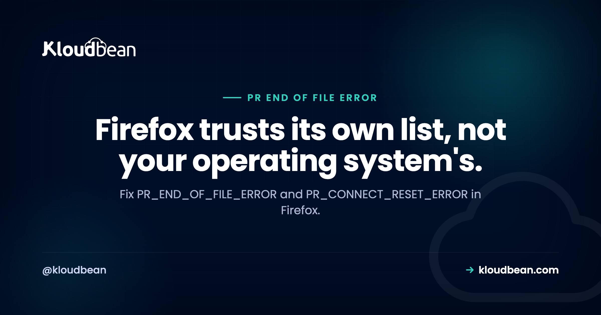

PR_END_OF_FILE_ERROR and PR_CONNECT_RESET_ERROR Explained

Firefox says "Secure Connection Failed" and prints PR_END_OF_FILE_ERROR, or its close relative PR_CONNECT_RESET_ERROR. You open Chrome and the same page loads fine. That combination sends people hunting through certificate settings, which is almost always the wrong place. Start somewhere more useful: neither of these is a TLS error code at all, and once you know where they actually come from, the diagnosis narrows fast.
The server closed the TCP connection before the TLS handshake finished, so Firefox ran out of data where it expected the next handshake message. PR_CONNECT_RESET_ERROR is the noisier version: something sent a TCP reset instead of hanging up quietly. Both usually mean one of three things. The server offers only TLS versions or ciphers modern Firefox refuses, something in the path (antivirus scanning HTTPS, a VPN, a corporate proxy) is terminating the connection, or Firefox does not trust a root certificate that your operating system does, because Firefox keeps its own trust store.
Neither name mentions TLS, and that is not an accident
Here is the detail that reframes everything. These codes don't come from Firefox's TLS stack. They come from NSPR, the portable runtime layer underneath its networking, and NSPR's error list is general-purpose input and output. Mozilla's own NSPR error reference defines them plainly:
| Code | What NSPR says it means | What that is in a browser |
|---|---|---|
PR_CONNECT_RESET_ERROR | The TCP connection has been reset by the peer | Something actively killed the connection |
PR_END_OF_FILE_ERROR | Unexpectedly encountered end of file | The stream stopped where more was expected |
Read those definitions again. Neither says anything about certificates, ciphers, expiry, or trust. That's why the names are so unhelpful, and why searching for them turns up file-handling advice. Firefox is not telling you your certificate is broken. It's telling you the conversation ended early, which is a much wider and much more mundane class of problem.
The practical consequence: stop inspecting your certificate first. A certificate problem in Firefox produces a warning page with an SEC_ERROR_ or MOZILLA_PKIX_ code and an "Advanced" button offering to continue. These two codes give you no such option, because the connection never got far enough to have an identity to reject.
First question: does Chrome load the same page?
This one answer eliminates most of the search results you're about to read. Test the same URL in a Chromium browser, then in Firefox with a fresh profile.
| Chrome | Firefox | Almost certainly |
|---|---|---|
| Works | Fails | Firefox's own trust store, or its TLS floor. See the next section. |
| Fails too | Fails | The server or the network path. Not a Firefox problem at all. |
| Works | Fails only in your normal profile | An extension, or a pref someone changed. Test a fresh profile. |
| Both fail on this network only | Antivirus HTTPS scanning, a VPN, or a corporate proxy. |
If Chrome fails as well, you're in the wrong guide. The Chromium side of the same failures lives in ERR_CONNECTION_RESET and ERR_SSL_PROTOCOL_ERROR.
Firefox keeps its own list of trusted certificate authorities
This is the single most useful fact for the "works in Chrome, fails in Firefox" pattern, and most guides skip it.
Firefox does not read your operating system's certificate store by default. It ships and maintains its own root store under Mozilla's root store policy. Chrome, historically and on Windows, leans on the OS store. So the moment a root certificate gets added to Windows or macOS by something other than a browser, Chrome sees it and Firefox doesn't.
What adds roots to your OS store? Antivirus products that inspect HTTPS traffic, corporate device management, VPN clients, and development tools that generate local certificates. Each installs its own root so it can re-sign traffic without complaint. Chrome accepts it. Firefox has never heard of it, the handshake it's offered doesn't chain to anything Firefox trusts, and the connection dies.
Mozilla built a preference for exactly this. In Privacy and Security there's a checkbox worded as allowing Firefox to automatically trust third-party root certificates you install. The underlying pref is security.enterprise_roots.enabled, and the enterprise policy equivalent is ImportEnterpriseRoots. Mozilla's own security blog introduced it as the fix for antivirus-caused TLS failures on Windows and macOS.
Turn it on and the error often disappears. Worth understanding the tradeoff before you do: you're telling Firefox to trust whatever roots are on the machine, which is precisely what lets software intercept your encrypted traffic. On your own laptop with antivirus you chose, that's a reasonable trade. On a machine you don't control, the error is arguably telling you something true.
PR_END_OF_FILE_ERROR: the server hung up mid-handshake
A quiet close, no reset. The most common reason is that the two sides had nothing in common and the server gave up without sending a proper alert. Test that directly instead of guessing, because openssl will tell you in one line what a browser only hints at:
# Force a specific version. If 1.2 works and the browser fails, look at Firefox.
openssl s_client -connect example.com:443 -servername example.com -tls1_2 </dev/null
openssl s_client -connect example.com:443 -servername example.com -tls1_3 </dev/nullThe server only offers TLS versions Firefox refuses. Modern Firefox enforces a minimum version, controlled by security.tls.version.min in about:config. Rather than memorise which release changed the default, check the pref and compare it against what the server actually accepts using the commands above. If TLS 1.2 fails at the server and only 1.0 succeeds, the server is the thing to fix, not the browser. Lowering that pref to load one site leaves it lowered for every site you visit afterwards.
No shared cipher suite. Same shape of problem one level down. The server's cipher list is old enough that nothing overlaps with what Firefox will accept. openssl s_client failing on handshake while reporting no shared cipher is the giveaway.
SNI is not being handled. If one address serves several sites and the server can't match the name Firefox sent, it may drop the connection instead of answering. Note the -servername flag above: omit it and you're testing something different from what your browser does. What SNI is covers the mechanism.
You requested HTTPS from a port serving plain HTTP. This has its own distinct error, SSL_ERROR_RX_RECORD_TOO_LONG, and it's covered under cause three in ERR_SSL_PROTOCOL_ERROR. If that's the code you're seeing, go there.
PR_CONNECT_RESET_ERROR: something sent a reset
A reset is deliberate. Some component decided to kill this connection rather than let it complete, which makes the list of suspects short.
Software inspecting HTTPS on your machine. The most common cause and the least suspected. Disable HTTPS or SSL scanning specifically, not the whole product, then retest. If that fixes it, you've found it and can decide what to do about it. Note this pairs with the trust-store section above: the same software often causes both failure modes depending on how it's configured.
A VPN, proxy, or network appliance. Anything terminating or inspecting traffic in the middle can reset it. Disconnect and retest. On a managed corporate machine, deep packet inspection may be resetting by policy, which is a conversation rather than a setting.
The server or its firewall. A rule using REJECT rather than DROP sends a refusal, and intrusion prevention software can reset a connection based on the source address. The same distinction drives Cloudflare's 521 and 522 split, one layer further out.
Large packets failing while small ones succeed. If some pages load and others die partway, that's an MTU problem in the path rather than TLS. ERR_CONNECTION_RESET covers how to confirm it with a do-not-fragment ping.
If you run the site and visitors report this
Different job. You have working clients and failing ones, which is the best position to diagnose from, so find what differs rather than changing configuration hopefully.
Check what your server actually offers, not what you believe it offers. Configuration files drift, and a reverse proxy in front may be terminating TLS with entirely different settings from the application server behind it.
# What does the chain look like from outside?
openssl s_client -connect example.com:443 -servername example.com -showcerts </dev/null \
| grep -E 'subject=|issuer='Read the issuer line. If the chain relies on a root that isn't in Mozilla's store, Firefox users fail while others succeed. That's the server-side mirror of the trust-store problem, and it's common with private or internal certificate authorities.
Check whether you're resetting them. Fail2ban is genuinely useful and we configure it by default, and it can be the thing sending the reset. A visitor who mistyped a password, or an office sharing one public address, gets dropped at the firewall while everyone else is fine. A stale IP deny rule does the same thing and outlives the reason it was written.
Ask one failing visitor for the exact code. Reset and end-of-file point in different directions, and a screenshot settles in seconds what guessing takes an afternoon to narrow.
Whose problem is this, exactly
Start with what no host can fix. A large share of these errors live on the visitor's machine: their antivirus, their VPN, their employer's proxy, their Firefox profile. Nobody can reach any of that from a server, and a guide that implies otherwise is selling.
What managed hosting does remove is the server-side half. On Kloudbean, SSL certificates are issued and renewed for you from a publicly trusted authority, so the private-root and expiry routes to this error close on their own. TLS configuration is maintained rather than left as a file you edited once and forgot, which is what eventually produces the too-old-for-modern-browsers case. Shorewall and Fail2ban are configured up front and both live in the dashboard, so if a ban is resetting a real visitor you can see it and lift it instead of guessing. Seven cloud providers, one dashboard, and free migration assistance if you're moving something already running.
The boundary is the usual one. TLS, patching, backups and the stack itself are handled for you. Your application code, your DNS, and your visitors' machines stay yours.
Other build failures with unhelpful messages
For the Chromium versions of the same two failures, ERR_CONNECTION_RESET and ERR_SSL_PROTOCOL_ERROR, which also covers the plain-HTTP-on-an-HTTPS-port case. When the handshake completes and the identity is refused instead, fixing SSL certificate errors. For the mechanics underneath all of it, SSL and TLS explained and what SNI is. If a CDN sits in front, Cloudflare 525 is the same failure between the edge and your origin. And if you have not identified your browser's code yet, this site can't be reached maps them to layers.
Deploys that tell you what broke.
Build logs stream live in the console, deployment history keeps what happened, and the logs viewer separates app errors from web requests, so a failed start is a five-minute read rather than a guessing game.
- ✓ Live build logs
- ✓ Deployment history
- ✓ Logs viewer
- ✓ Managed process restarts
- ✓ Automatic backups
- ✓ Git deploy
Plans from $8/mo · Free migration assistance · Free trial
FAQ
What does PR_END_OF_FILE_ERROR mean?
It means the connection closed before the TLS handshake finished, so Firefox reached the end of the stream where it expected more handshake data. The code comes from NSPR, the runtime layer beneath Firefox's networking, where it is defined as unexpectedly encountering end of file. It says nothing about your certificate, which is why inspecting certificates first is usually wasted effort.
Why does the site work in Chrome but not Firefox?
Usually because Firefox maintains its own list of trusted certificate authorities and does not read your operating system store by default. Antivirus software, VPN clients, and corporate device management install roots into the OS store, which Chrome accepts and Firefox has never seen. Firefox's stricter minimum TLS version is the other common reason.
What is the difference between PR_END_OF_FILE_ERROR and PR_CONNECT_RESET_ERROR?
A reset is an active kill: something sent a TCP reset and deliberately ended the connection. An end of file is a quiet hang-up, where the other side simply stopped talking. Resets point at firewalls, inspection appliances, and security software. End of file points more often at no shared TLS version or cipher.
Is PR_CONNECT_RESET_ERROR a Firefox-only error?
The wording is. The underlying failure is not. Chromium browsers including Chrome, Edge, Brave, and Opera show ERR_CONNECTION_RESET for the same TCP reset. If you see it in every browser, treat it as a network or server problem rather than something to fix in Firefox.
Can antivirus software cause these errors?
Yes, and it is the most common single cause. Products that scan HTTPS traffic terminate your encrypted connection and open their own, which can both reset handshakes and present a root certificate Firefox does not trust. Disable HTTPS or SSL scanning specifically rather than the whole product, then retest.
What is security.enterprise_roots.enabled?
A Firefox preference that makes it import root certificate authorities already present in the operating system store, with a checkbox equivalent in Privacy and Security and an ImportEnterpriseRoots policy for managed deployments. Mozilla added it to resolve antivirus-related TLS failures. Enabling it means trusting whatever roots are installed on that machine, which is the tradeoff to weigh.
Should I lower security.tls.version.min to fix this?
No, other than as a temporary diagnostic. The pref applies to every site you visit, so weakening it to load one server leaves you negotiating older TLS everywhere afterwards. If the server genuinely only speaks an obsolete version, that server is the thing to fix. Confirm what it supports with openssl before changing anything in the browser.
How do I test what my server actually supports?
Use openssl s_client with an explicit version flag and the servername option so SNI is sent the way a browser sends it. Try TLS 1.2 and 1.3 separately. Add showcerts and read the subject and issuer lines to see the chain a visitor is offered, which reveals whether it relies on a root Firefox will not trust.